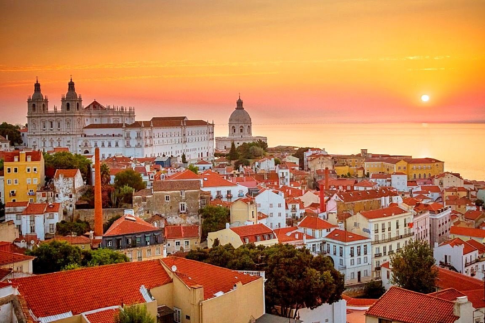
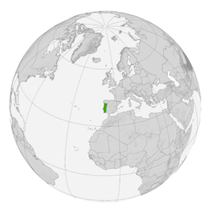
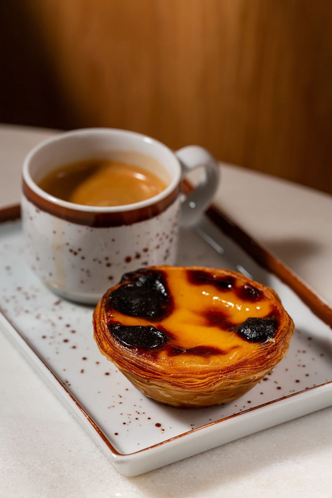
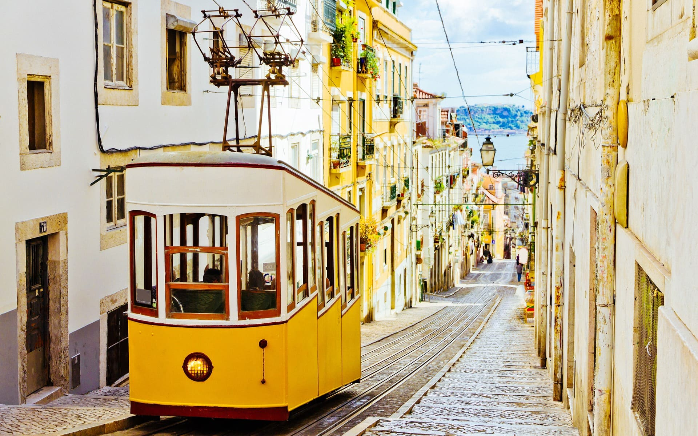
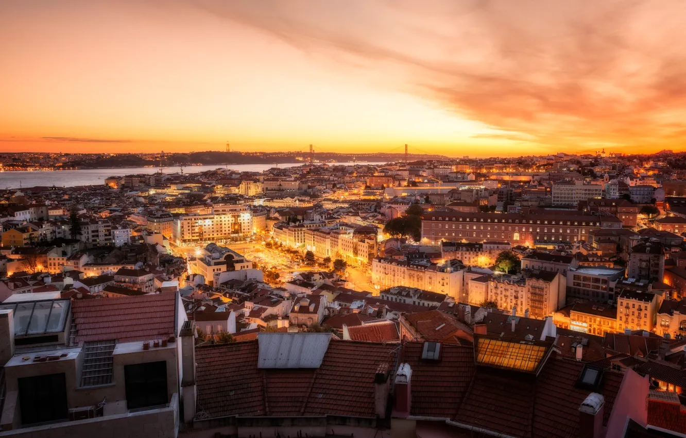
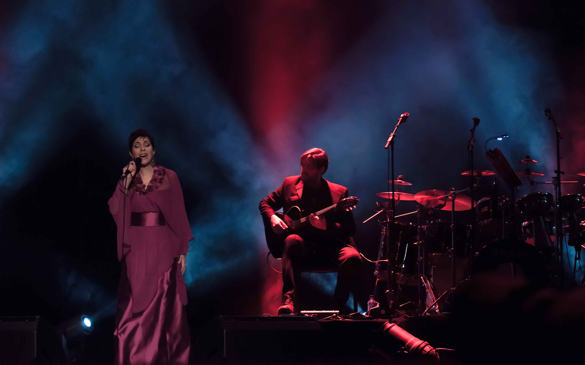
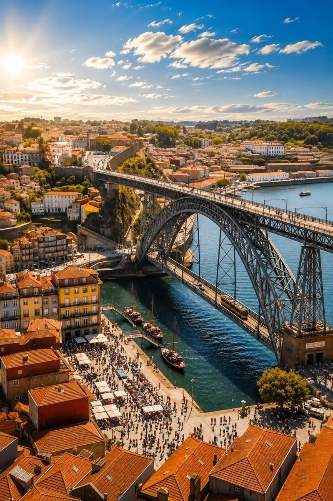
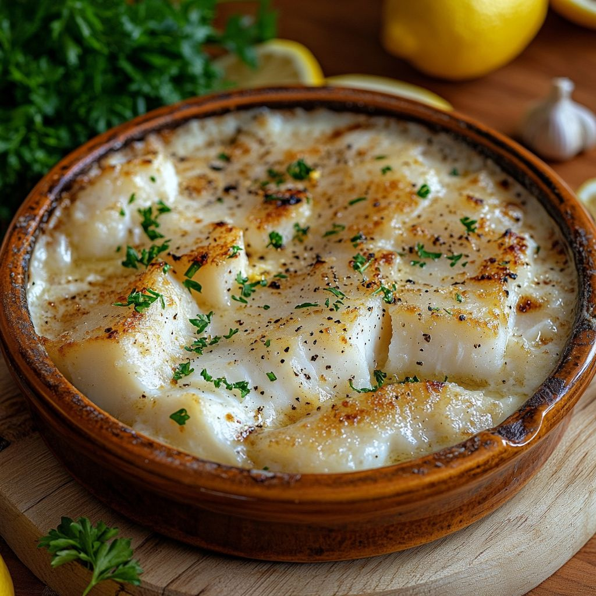
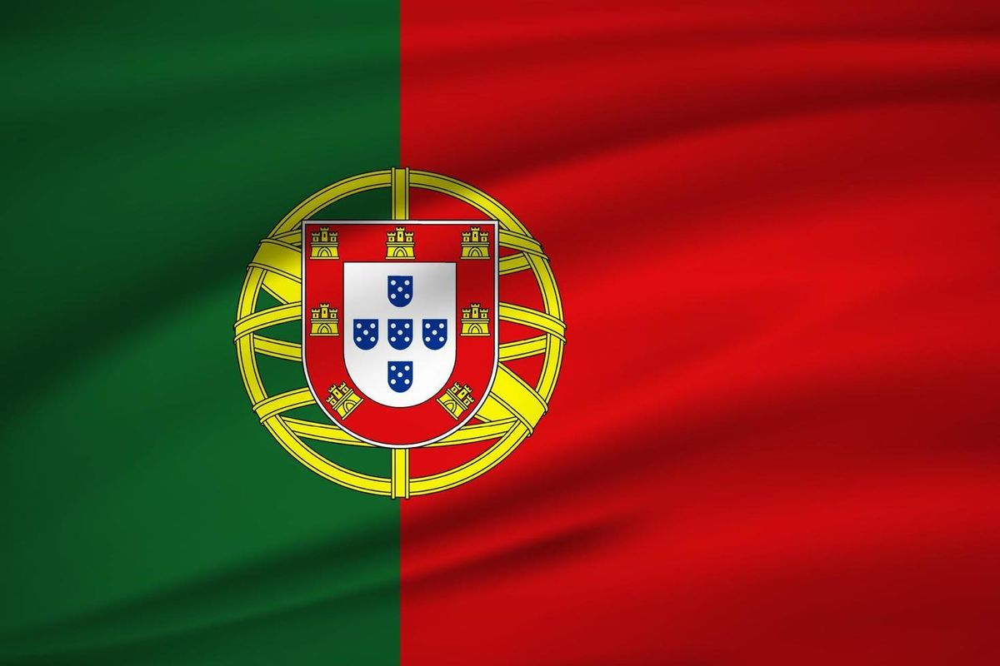
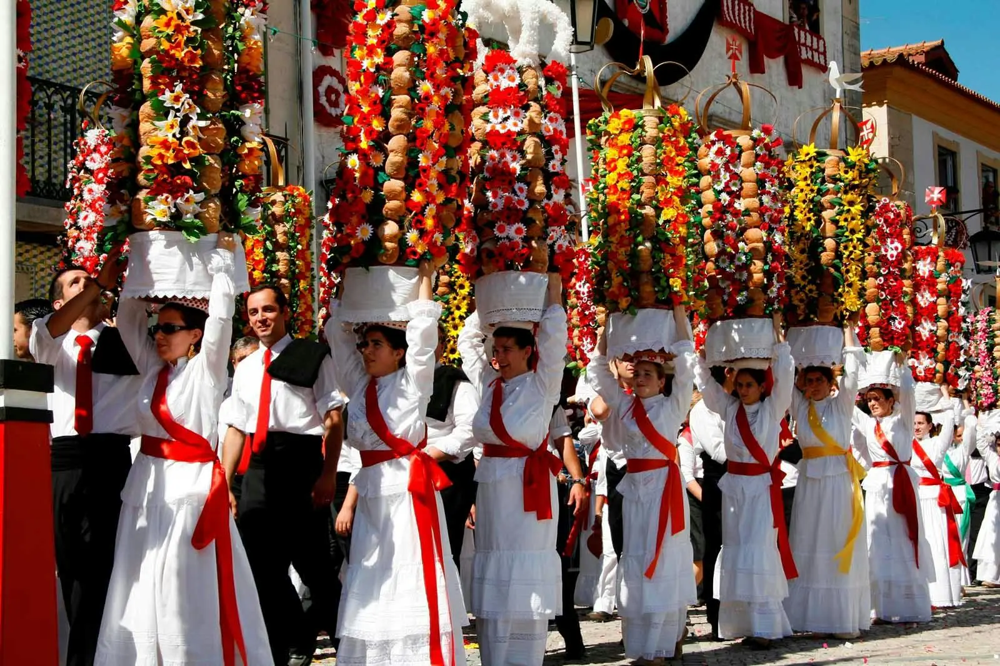

Португалия
Страна мореплавателей и фаду — от узких улочек Лиссабона до террасных виноградников долины Дору, чьи границы не менялись почти 730 лет.
Португалия — самая западная страна континентальной Европы, обращённая лицом к Атлантике. Отсюда пять веков назад отправлялись каравеллы Васко да Гамы и Магеллана, изменившие карту мира. Сегодня страна сочетает средневековые замки, лазурную плитку азулежу и современный серф-туризм на побережье. Откройте Португалию и узнайте, чем небольшая страна когда-то управляла крупнейшей морской империей мира.
Португалия на карте мира

Португалия — юго-запад Европы, западная часть Пиренейского полуострова
Старейшая граница Европы: сухопутная граница Португалии с Испанией не менялась с 1297 года, когда был подписан Алкануишский договор — это делает её одной из старейших неизменных государственных границ в мире.
С кем граничит Португалия
У страны всего один сухопутный сосед — вся остальная граница проходит по Атлантическому океану:
Побережье Атлантики
Наведи курсор на карточку, чтобы узнать больше о каждом участке побережья:
Коста-Верде
Зелёное побережье севера страны, от Порту до границы с Испанией
Коста-де-Прата
«Серебряное побережье» в центре страны с длинными песчаными пляжами
Побережье Лиссабона
Устье реки Тежу и пляжи Кашкайша, любимые сёрферами
Алгарве
Южное побережье с золотыми скалами и пещерами Бенажил
Общие сведения
Площадь
92 212 км² (104-я в мире)
% водной поверхности
0,5 %
Население
~10 300 000 чел. (89-е)
Плотность
112 чел./км²
Столица
Лиссабон
Форма правления
Полупрезидентская республика
Официальный язык
Португальский
Президент
Избирается на 5 лет
Названия жителей
Португальцы
Валовой Внутренний Продукт
На душу населения
~27 000 долл.
Итого
~280 млрд
Валюта
евро(EUR)
Телефонный код
+351
Часовой пояс
UTC+0 (Азоры — UTC-1)
Интерактивная карта регионов
Наведи курсор на плитку — появится главный город региона и любопытный факт о нём. Кнопки ниже подсвечивают целую макрозону страны.
Наведите курсор на любую плитку карты — здесь появится главный город региона и интересный факт о нём.
Один день в Португалии
Представьте, что сегодня вы проснулись где-то в Португалии. Как может выглядеть ваш идеальный день?

Доброе утро, Лиссабон
Начните день как местные — маленькой чашкой крепкого кофе (bica) и тёплым паштел де ната прямо у стойки кондитерской.
📍 Лиссабон
Прогулка по Алфаме
Прокатитесь на знаменитом жёлтом трамвае №28 по узким улочкам старейшего района города — Алфамы, петляющей вокруг холма с замком.
📍 Алфама, Лиссабон
Закат с миража
Поднимитесь на одну из смотровых площадок (miradouro) — Лиссабон стоит на семи холмах, и с каждой из них открывается свой вид на реку Тежу.
📍 Смотровая площадка
Вечер фаду
Завершите день в маленьком доме фаду — меланхоличная музыка о тоске (saudade) под гитару считается душой португальской культуры.
📍 Дом фаду, АлфамаСамые красивые места
 Белемская башня
Белемская башня
Крепость XVI века у устья реки Тежу, откуда отправлялись каравеллы эпохи Великих открытий.
 Дворец Пена
Дворец Пена
Разноцветный романтический дворец на вершине холма в Синтре — один из самых причудливых замков Европы.
 Долина Дору
Долина Дору
Террасные виноградники вдоль реки Дору, где веками делают знаменитый портвейн.
 Побережье Алгарве
Побережье Алгарве
Золотые скалы, гроты и пещера Бенажил на южном побережье страны.

ПортуРазноцветный квартал Рибейра на берегу Дору и мост Дона Луиша I, спроектированный учеником Эйфеля.
 Азорские острова
Азорские острова
Вулканический архипелаг с кратерными озёрами Сети-Сидадиш посреди Атлантики.
Национальная кухня

Бакальяу
Солёная треска — главный продукт национальной кухни, хотя эта рыба даже не водится у берегов Португалии. Говорят, что существует по одному рецепту бакальяу на каждый день года.

Паштел де ната
Открытый пирожок с заварным кремом в хрустящем слоёном тесте — рецепт монахи монастыря Жеронимуш держали в секрете вплоть до XIX века.

Кальдо верде
Суп из капусты кале, картофеля и колбасы chouriço — простое крестьянское блюдо с севера страны, ставшее символом домашней португальской кухни.
Флаг и герб Португалии
Символы, за которыми стоит своя история

Зелёно-красный флаг с армиллярной сферой и щитом — один из самых узнаваемых флагов Европы
Что означают цвета флага
Наведи курсор на каждую полосу, чтобы узнать её значение:
Зелёный
Традиционно связывают с надеждой и Орденом Христа — преемником тамплиеров в Португалии
красный
По одной из версий символизирует кровь тех, кто погиб при провозглашении Республики в 1910 году
Жёлто-белый герб
Золотая армиллярная сфера и белый щит в месте стыка полос — самая узнаваемая деталь флага
Краткая история флага
- 1143Королевство Португалия признано независимым, начинает формироваться собственная символика.
- 1385При Ависской династии закрепляется герб с пятью малыми щитами (quinas).
- 1640После Реставрации независимости от Испании герб получает современные очертания.
- 1910После провозглашения Республики принят современный зелёно-красный флаг с армиллярной сферой.
Герб Португалии — что зашифровано в символах

День Португалии, Камоэнса и португальских общин — 10 июня, главный национальный праздник страны.
Государственные праздники
Главный праздник страны — 10 июня, День Португалии, Камоэнса и португальских общин. Отмечается в честь смерти поэта Луиша де Камоэнса в 1580 году и объединяет всех, кто считает себя частью португальской культуры, включая многочисленную диаспору.
Новый год
Ano Novo — семейный праздник и начало года
День Свободы
Dia da Liberdade — в честь Революции гвоздик 1974 года, положившей конец диктатуре
День труда
Dia do Trabalhador — государственный выходной по всей стране
День Португалии
Dia de Portugal — главный национальный праздник страны
Успение Богородицы
Assunção de Nossa Senhora — один из главных летних праздников
День Республики
Implantação da República — в честь провозглашения республики в 1910 году
День восстановления независимости
Restauração da Independência — в честь освобождения от испанского владычества в 1640 году
Рождество
Natal — семейный ужин и подарки под ёлкой